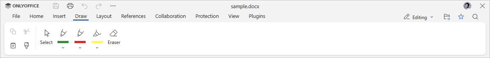
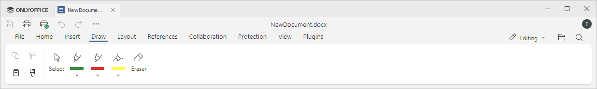

Kartica Crtanje
Kartica Crtanje u Uređivaču dokumenata omogućava korisnicima da obavljaju osnovne operacije crtanja.
Odgovarajući prozor u Online Uređivaču dokumenata:

Odgovarajući prozor u Desktop Uređivaču dokumenata:

Pomoću ove kartice možete:
- koristiti alat za izbor da promenite veličinu ili obrišete natpis, crtež ili označavanje,
- koristiti olovku i markere da crtate ili dodajete rukom pisane beleške i naglašavanje,
- koristiti gumicu da uklonite ceo crtež ili rukom pisani tekst.